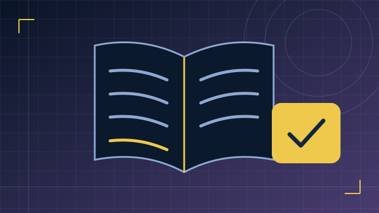

Як тренуватися ефективно без вигорання
Як обрати мету заняття, поєднати вправи з матчами та розбирати власні рішення без нескінченного повторення ігор.
Читати далі : Як тренуватися ефективно без вигоранняЯк обрати мету заняття, спланувати час і підтримати дитину. Практичні матеріали з посиланнями на дослідження та профільні джерела.

Як обрати мету заняття, поєднати вправи з матчами та розбирати власні рішення без нескінченного повторення ігор.
Читати далі : Як тренуватися ефективно без вигоранняЯк врахувати повну тривалість заняття, запланувати паузи та залишити місце для справ поза грою.
Читати далі : Гра і відпочинок: як знайти рівновагуЯк обговорювати тренування з дитиною, оцінювати пропозиції наставників і домовлятися про зрозумілі правила.
Читати далі : Що варто знати батькам про кіберспортОбери кількість матчів або доступний час. Калькулятор покаже тривалість вправ, практики та розбору.
Після матчу обери один повторюваний епізод. Сформулюй дію, яку зможеш відпрацювати окремо, і перевір її в наступній грі.
Як зробити тренування цілеспрямованим →Перед стартом врахуй очікування та розбір. Визнач, після якої години вже не починатимеш новий матч.
Як планувати час і перерви →Запитай, що дитині подобається в грі й що вона хотіла б навчитися робити краще. Від цього простіше перейти до домовленостей про час.
Як почати розмову →Одна дія, яку ти свідомо повторюєш. Наприклад, перед раундом називаєш напарнику свою позицію.
Коротка підготовка перед основною вправою. Почни зі знайомої дії у спокійному темпі.
Вибір місця під конкретне завдання: бачити потрібний напрямок, допомогти команді чи мати шлях відступу.
Збирання ресурсів у грі. У Dota 2 приклад — добивати крипів, щоб отримувати золото.
Перегляд конкретного епізоду: що ти знав, яке рішення ухвалив і що спробуєш інакше.
Коротке повідомлення, яке допомагає напарникам діяти: де ти перебуваєш, що бачиш і куди рухаєшся.